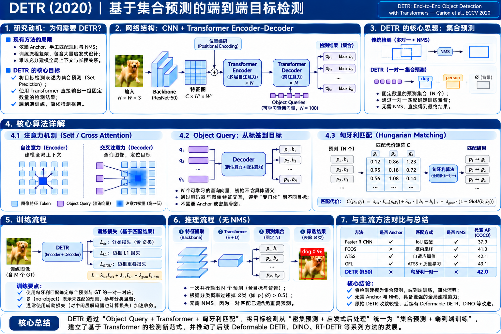

DETR 算法原理研究笔记
从“在大量 Anchor / 特征位置生成候选框并去重”，转向“用 Object Queries 直接预测一组目标，再用全局一对一匹配监督”。DETR 真正改变的是检测结果的表示方式与训练分配方式。

研究问题：为什么检测还需要一次更根本的改变？
从密集位置上的预测转向「整幅图的目标集合预测」。
传统密集检测：先定义大量预测位置
在大量网格位置或候选区域产生分类和回归结果。一个目标可能对应多个预测，训练时通过多对一的规则定义正样本，推理时再借助 NMS 合并重复框。
DETR：直接预测一个目标集合
网络直接输出 100 个槽位，每个槽位预测类别与一个框。真实图像可能只有 3 个物体；训练时让 3 个槽位分别匹配 3 个 GT，其余 97 个预测 ∅（no-object）。
网络结构：CNN → Encoder → Decoder → 集合预测
逐步跟踪张量从图像到 100 个检测槽位的变化。
① Backbone
输入 RGB 图像。ResNet-50 输出单层 C5 特征（stride≈32），通过 1×1 Conv 投影到 d=256。
② Encoder
将 H′×W′ 特征拉平成序列，加二维位置编码，6 个 Encoder Layer 通过 Self-Attention 建模空间位置间关系。
③ Decoder + Head
100 个可学习查询在 6 层 Decoder 中进行 Query Self-Attention + Cross-Attention，最终并行输出类别与框。
CNN 特征怎样变成 Transformer 可以处理的输入？
从二维特征图到长度为 H′W′ 的序列：让全局注意力看见所有位置。
为什么还要位置编码？
Attention 处理的是一组向量；如果没有空间位置信息，模型很难区分两个局部特征分别来自图像左边还是右边。位置编码参与 Q/K 的构造，让模型在全局关联时保留几何位置线索。
为什么 DETR 对小目标不占优势？
原始检测主干主要使用 单个 stride 32 特征层，小目标在其上所占位置少；全局 Attention 的计算量还会随 Token 数量增加，难以简单地一直提高分辨率。
示例：输入 800×1280，若 C5 空间尺寸恰为 25×40，则 L=1000 个图像 Token。只是尺寸示例，实际尺寸受 padding / 输入预处理影响。
核心机制：Encoder 与 Decoder 到底各做什么？
两个 Attention 不是同一个事情：前者在图像 Token 内交流，后者在 Query 与图像之间交流。
Transformer 内部的基本计算
Q（查询） 决定想找什么；K（键）用于和查询比较相关性；V（值）是加权汇集的信息。多个 Head 可以并行关注不同关联。
Encoder 的 Q/K/V 均来自图像 Token；Decoder Cross-Attention 的 Query 来自解码槽位，K/V 来自图像 Encoder 输出。
为什么它不等于 RoI Pooling？
RoI Pooling 先拿到明确的矩形候选框，然后从该矩形区域裁取特征。DETR 的 Cross-Attention 则让 Query 在整个图像特征序列上分配可学习的权重，逐步汇聚目标证据。
因此它不需要先求出候选框坐标才提特征，也不是在固定矩形区域里做平均池化。
交互实验 ①：一个 Object Query 怎样关注图像不同位置？
Object Query：100 个槽位，为什么能对应不同数量的物体？
Query 是预测槽位，不是预先划定的网格、Anchor，也不是 100 个必然存在的目标。
从哪里来的？
原始 DETR 使用一组可学习的 Object Query Embeddings，每个 Query 是 256 维的可训练向量。在 Decoder 中，这些向量与图像特征产生 Attention 交互，逐层得到检测表示。
查询之间如何避免重复？
多个 Query 可以彼此交流，但真正给出明确“不重复”训练方向的是 Hungarian Matching：每个 GT 最多匹配一个 Query；其它 Query 被监督为 ∅。仅靠 Self-Attention 本身并不提供严格去重约束。
分类使用 Softmax，包含 no-object 类。框由 MLP 预测，Sigmoid 使 (cₓ,cᵧ,w,h) 落在 0–1 的归一化坐标范围。
核心算法：匈牙利匹配如何让多个 Query 学会各管一个物体？
检测不是“预测出框就算”，还必须回答：这个 GT 到底监督哪个 Query？
pᵢ[cⱼ]：预测槽 i 对 GT 类别 cⱼ 的概率；bᵢ 为预测框；bⱼ* 为 GT 框。原始开源实现中匹配代价的分类项用 −p 而不是 −log(p)，这与真正的分类训练 Loss 不同。默认匹配系数为 1、5、2。
交互实验 ②：真的求一个全局最小代价的一对一匹配
| Query | GT 人 | GT 狗 | GT 球 |
|---|
注意：匹配的最优化是离散求解，正常训练不沿 Hungarian 操作反向传播；但分配确定之后，预测分数和坐标会进入可微分类 / 回归 Loss，更新 Transformer 与 CNN。
训练损失：匹配之后，谁产生梯度？
先“选老师”，再“学答案”：Hungarian 负责分配，不负责学习参数。
示意写法，真实实现还涉及 box 数量归一化。no-object 类权重默认 0.1，以免 100 个槽位中大量空槽压倒真实目标的分类监督。类别 Loss 对所有 Query 计算；回归 Loss 只对匹配到真实物体的 Query 计算。
匹配 Query
得到真实目标类别监督 + 4 维回归监督，分类 CE、L1 和 GIoU 都提供梯度。
未匹配 Query
类别目标变为 ∅，只计算分类 CE；不回归任意虚假的目标框。
辅助损失（Aux Loss）
6 层 Decoder 的中间层也输出同类型预测，分别通过集合匹配进行辅助监督，帮助模型更早学会对象数量与类别。
交互实验 ③：一个 Query 获得哪几个 Loss？
完整训练：从标注到每一层参数更新
不使用 Anchor 匹配或正负网格范围；直接在整组预测上做一对一全局监督。
训练输入
图像与 GT：每个目标的类别及边界框。图片执行随机缩放 / 裁剪等增强。
网络前向
ResNet → 单尺度特征 → Encoder → Decoder。100 Query 并行输出类别与归一化框。
一对一匹配
分类概率 + L1 + GIoU 建立代价矩阵；Hungarian 分配 Query/GT。
计算 Loss
所有 Query 分类 CE；匹配 Query 的 L1/GIoU；中间 Decoder 层辅助监督。
反向传播
通过 CE/L1/GIoU 更新 CNN、Encoder、Decoder、Query Embeddings 与两个输出头。
原始 DETR R50 的代表训练配置
| 项目 | 设定 |
|---|---|
| 预训练 | ResNet-50 ImageNet 预训练 |
| Object Queries | 100，隐藏维度 256 |
| Transformer | Encoder 6 层，Decoder 6 层，8 注意力头 |
| 优化器 | AdamW，Transformer LR 1e−4，Backbone LR 1e−5 |
| 训练周期 | 500 epochs（原论文基线） |
| Loss 权重 | CE:1；L1:5；GIoU:2；no-object:0.1 |
| 辅助监督 | Decoder 中间层重复使用集合预测 Loss |
具体 batch / 资源配置随实验和硬件而变化；本表是论文与官方代码的经典基线设置。
为什么它训练更难、更慢收敛？
早期的 Query 没有稳定的目标身份，预测框和类别都很弱；Hungarian 每一步根据当前预测重新匹配，网络需要同时学会定位、类别、对象数量、查询分工和全局关系。
训练初期
很多 Query 更容易预测背景；匹配选择也可能变化较大。没有 Anchor / 预定义正样本区域的强先验，收敛往往需要更长训练。
训练后期
Query 学会从图像关注目标、通过全局匹配形成更稳定的分工。原始 DETR 具有端到端简洁的检测流程，但代价是较长训练。
完整推理：100 个输出怎么变成最终目标集合？
没有 RPN / Anchor / 匹配 GT / NMS；直接从 Query 输出中解码并筛掉背景。
归一化坐标乘以对应图像宽高，即恢复像素框。注意：原始官方模型的 COCO 评估后处理取非 ∅ 类的最大概率作为分数；用户演示的分数阈值过滤是常见可视化策略，阈值不是模型内部的 Anchor/Proposal 策略。
交互实验 ④：不使用 NMS，过滤 6 个示意 Query
历史定位：DETR 相对 Faster R-CNN、FCOS、GFL 改变了什么？
真正的里程碑是 Set Prediction + Transformer + Bipartite Matching 三者结合。
| 研究 | 预测主体 | GT 分配 | 推理去重 | 核心设计问题 |
|---|---|---|---|---|
| Faster R-CNN (2015) | RPN Proposal + RoI Head | Anchor / RoI IoU 阈值 | NMS | 如何学习提出候选框 |
| FCOS (2019) | 每个 FPN 特征点 | 框内点 + 尺度约束 | NMS | 如何不用 Anchor 直接回归四边距离 |
| GFL (2020) | 密集特征位置 | ATSS | NMS | 如何统一分类质量与分布回归 |
| DETR (2020) | 100 Learned Object Queries | 全局一对一 Hungarian | 无需 NMS | 如何直接预测一组不重复的目标 |
为什么重要？
无需为不同尺度设计 Anchor 集，不需要人为指定哪个密集位置负责哪个 GT，也不需要 NMS。检测网络通过全局注意力与集合损失共同学习目标集合。
官方发布的 DETR-R50 在 COCO val5k 上得到约 42.0 AP，精度可与相应优化的 Faster R-CNN 基线竞争。
原版局限
原始 DETR 的收敛周期很长（500 epochs）、小目标性能相对弱、单尺度特征限制细粒度信息；图像 Token 多时全局 Self-Attention 成本上升。此外 Query 数限制最大输出数。
这些问题推动了后续 Deformable DETR 等改进，但它们不是 DETR 原始版本的一部分。
理解检查与原始论文
读完这篇，应该能够准确说出每个部件的输入、输出、监督和代价。
五个关键问题
- 为什么 DETR 需要 100 个 Query，但一张图像不必有 100 个物体？
- Encoder Self-Attention 与 Decoder Cross-Attention 的 Q/K/V 来自哪里？
- 为什么 Hungarian Matching 是“先分配再计算 Loss”，而不是需要反向传播的预测头？
- 为何 no-object 也计算 CE，但不计算框回归 Loss？
- 为什么 DETR 不需要 NMS，原始版本的训练和小目标有什么代价？
论文与官方代码
Carion et al. (ECCV 2020)
End-to-End Object Detection with Transformers